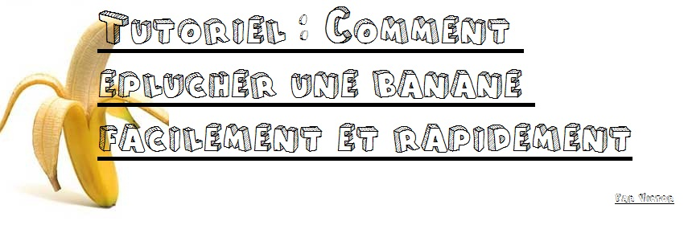

Bonjour à tous, aujourd'hui, je vais vous apprendre à bien éplucher et manger votre banane.
Ce tutoriel de déroulera en 3 parties, toutes aussi intéresseantes les unes que les autres.
Pour ce tutoriel, vous aurez besoin :
Une fois munis de tout ces objets, vous pourrez enfin commencer le tutoriel, qui promet d'être palpitant!
Nous entrons dans la partie pratique. L'épluchure de la banane est très importante car elle perment de bien manger le fruit. Avec la peau, la banane perd toute sa saveur...
Une fois votre objet coupant en main, proçédez à une incision au niveau de la partie basse de la banane. Ensuite, une fois la peau légèrement fendue, attrapez les deux bouts de peau et tirez comme si vous ouvriez un livre. ATTENTION : Il ne faut jamais essayer de craquer la banane du haut, coupez la toujours !


Normalemnt, si tout se passe bien, la peau devrait s'enlever sans trop de difficultés. Une fois la peau enlevée, votre banane devrait ressembler à ceci :


Jetez votre peau de banane à la poubelle préalablement ouvertre grace à la pédale se situant au bas de celle-cie(de poubelle). Si vous ne jetez pas vos déchets, il risquent d'attirer les insectes, alors attention!
La dégustation est beaucoup plus facile que les deux autres étapes : il suffit tout simplement de couper la banane en plusieurs morceaux, d'ouvrir votre bouche et de manger la banane.
Il est plutôt recommandé de mâcher la banane ou de ne pas la manger d'un coup pour éviter l'étouffement,qui peut être fatal. La mort qui peut être très embêtante dans la vie professionnelle, au même titre qu'un bras cassé ou une grosse grippe.
Nous ne mettrons pas de photos ici pour des raisons évidentes ( mauvaise intérprétation des images)
Voici ma technique en vidéo, nommée technique du Chimpanzé :
J'éspère que ce tutoriel vous aura aidé à vous rapprocher de vos amis, car vous savez enfin ouvrir une banane. A bientôt pour un nouveau tuto, qui consistera à éplucher une patate.


Mon tuto t'a plu?